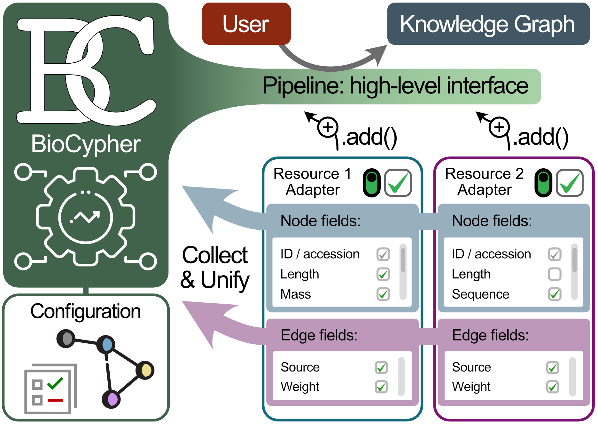

Tutorial - Adapters
Existing and planned adapters—overview
For a list of existing and planned adapters, please see here. You can also get an overview of pipelines and the adapters they use in our meta graph.

Project Template
To facilitate the creation of a BioCypher pipeline, we have created a template repository that can be used as a starting point for your own adapter. It contains a basic structure for an adapter, as well as a script that can be used as a blueprint for a build pipeline. The repository can be found here.
A "BioCypher adapter" is a python program responsible for connecting to the BioCypher core and providing it with the data from its associated resource. In doing so, it should adhere to several design principles to ensure simple interoperability between the core and multiple adapters. In essence, an adapter should conform to an interface that is defined by the core to give information about the nodes and edges the adapter provides to enable automatic harmonisation of the contents. An adapter can be "primary", i.e., responsible for a single "atomic" resource (e.g. UniProt, Reactome, etc.), or "secondary", i.e., connecting to a resource that is itself a combination of multiple primary resources (e.g. OmniPath, Open Targets, etc.). Due to extensive prior harmonisation, the latter is often easier to implement and thus is a good starting point that can be subsequently extended to and replaced by primary adapters.
Warning
The adapter interface is still under development and may change rapidly.
Adapter philosophy
There are currently two 'flavours' of adapters. The first is simpler and used in workflows that are similar to harmonisation scripts, where the BioCypher interface is instantiated in the same script as the adapter(s). In the second, the BioCypher interface is contained in the adapter class, which makes for a more complex architecture, but allows for more involved workflows. In pseudo-code, the two approaches look like this:
from biocypher import BioCypher
from adapter import Adapter
bc = BioCypher()
adapter = Adapter()
bc.write_nodes(adapter.get_nodes())
Here, the script file is the central point of control, orchestrating the entire interaction between the BioCypher core and the adapter(s). Examples of this simpler format are the Open Targets KG and the CROssBAR v2.
On the other hand, the more involved approach looks like this:
| Adapter base class | |
|---|---|
Here, the adapter class (and adapters inheriting from it) contains a singleton instance of the BioCypher interface. Thus, the adapter needs to provide BioCypher functionality to the outside via dedicated methods. This allows for more complex workflows, for instance, reducing clutter when executing multiple adapters in a single for-loop, or writing from a stream of data, e.g. in a Neo4j transaction (which happens inside the adapter).
from adapters import AdapterChild1, AdapterChild2
adapters = [AdapterChild1(), AdapterChild2()]
for adapter in adapters:
adapter.write_nodes()
Examples of this approach are the IGVF Knowledge Graph and the Clinical Knowledge Graph migration.
Note
While there are differences in implementation details, both approaches are largely functionally equivalent. At the current time, there is no clear preference for one over the other; both are used. As the ecosystem matures and more high-level functionality is added (e.g. the pipeline), advantages of one approach over the other may become more apparent.
Adapter functions
In general, a single adapter fulfils the following tasks:
- Loading the data from the primary resource, for instance by using the
BioCypher
Resourcedownload / caching functions (as used in the CollecTRI example), by using columnar distributed data formats such as Parquet (as in the Open Targets example adapter), by using a running database instance (as in the CKG example adapter), or by simply reading a file from disk (as in the Dependency Map example adapter). Generally, any method that allows the efficient transfer of the data from adapter to BioCypher core is acceptable.
-
Passing the data to BioCypher as a stream or list to be written to the used DBMS (or application) via a Python driver ("online") or via batch import (e.g. from CSV files). The latter has the advantage of high throughput and a low memory footprint, while the former allows for a more interactive workflow but is often much slower, thus making it better suited for small incremental updates.
-
Providing or connecting to additional functionality that is useful for the creation of knowledge graphs, such as identifier translation (e.g. via pypath.mapping as in the UniProt example adapter), or identifier and prefix standardisation and validation (e.g. via Bioregistry as in the UniProt example adapter and others).
For developers
We follow a design philosophy of "separation of concerns" in BioCypher. This means that the core should not be concerned with the details of how data is loaded, but only with the data itself. This is why the core does not contain any code for loading data from a resource, but only for writing it to the database. The adapter is responsible for loading the data and passing it to the core, which allows for a more modular design and makes it easier to maintain, extend, and reuse the code.
For introduction of new features, we recommend to first implement them in the adapter, and to move them to the core only if they have shown to be useful for multiple adapters.
1. Loading the Data
Depending on the data source, it is up to the developer of the adapter to find
and define a suitable representation to be piped into BioCypher; for instance,
in our pypath adapter, we load the entire pypath object into memory to
be passed to BioCypher using a generator that evaluates each pypath object
and transforms it to the tuple representation described below. This is made
possible by the "pre-harmonised" form in which the data is represented within
pypath. For more heterogeneous data representations, additional
transformations may be necessary before piping into BioCypher.
For larger datasets, it can be beneficial to adopt a streaming approach or batch processing, as demonstrated in the Open Targets adapter and the CKG adapter. BioCypher can handle input streams of arbitrary length via Python generators.
2. Passing the Data
We currently pass data into BioCypher as a collection of tuples. Nodes are
represented as 3-tuples, containing:
- the node ID (unique in the space of the knowledge graph, ideally a CURIE with
a prefix registered in the Bioregistry)
- the node type, i.e., its label (this is the string that is mapped to an
ontological class via the input_label field in the schema configuration)
- a dictionary of node attributes
While edges are represented as 5-tuples, containing:
- the (optional) relationship ID (unique in the space of the KG)
- the source node ID (referring to a unique node ID in the KG)
- the target node ID (referring to a unique node ID in the KG)
- the relationship type, i.e., its label (this is the string that is mapped to
an ontological class via the input_label field in the schema configuration)
- a dictionary of relationship attributes
Standardised node and edge representation
This representation will probably be subject to change soon and yield to a more standardised interface for nodes and edges, derived from a BioCypher core class. We refer to this development in an issue.
Strict mode
We can activate BioCypher strict mode with the strict_mode option in the
configuration. In strict mode, BioCypher will raise an error if it encounters a
node or edge without data source, version, and licence. These currently need to
be provided as part of the node and edge attribute dictionaries, with the
reserved keywords source, version, and licence (or license). This may
change to a more rigorous implementation in the future.